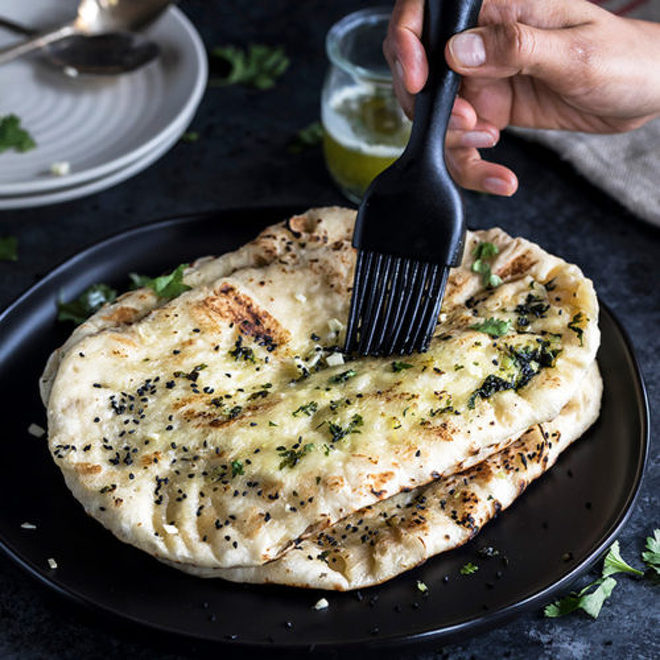

Garlic Naan Bread
Home

Ingredients
Naan Bread
- 1/4 cup warm water
- 2 tsp granulated sugar
- 1 1/2 tsp active dry yeast or instant, rapid rise
- 3/4 cup milk, warm
- 3/4 cup Greek yogurt or natural plain yogurt
- 1/4 cup vegetable oil, plus 2 tsp extra for cooking
- 2 cloves minced garlic
- 4 cups plain flour plus extra for dusting
- 1 tsp baking powder
- 1 tsp salt
Garlic Butter Topping
- 3 tbsp butter, melted
- 2 cloves garlic, minced
- 1 tsp fresh cilantro (coriander) or parsley, chopped
Instructions
Naan Bread
- Combine together the water, sugar and yeast. Let sit for 5-10 minutes or until the mixture begins to bubble on top
- Add in the milk, yogurt, oil, minced garlic, flour baking powder and salt. Mix until the dough comes together with your hands.
- Turn dough out onto lightly floured surface. Use floured hands to knead the dough until smooth, about 3 to 5 minutes.
- Lightly grease the same mixing bowl with a small spray of cooking oil. Transfer dough to the bowl and cover with plastic wrap. Let rest at room temperature for about an hour until doubled in size.
- When ready to cook, divide the dough into 10 equal pieces. Roll into balls, then use a rolling pin to roll each piece of dough into a large oval, about 6-inches long and ⅛-inch thick. Repeat with remaining dough.
- Heat a large cast iron skillet over medium-high heat. Grease skillet all over with ½ teaspoon of the extra oil.
- Place one piece of the naan on the oiled hot skillet and cook until bubbles form on top, about 1-2 minutes. While cooking, brush the top with a little oil.
- Flip and cook for another 1-2 minutes, until large golden spots appear on the bottom.
- Remove from the skillet and wrap in a clean kitchen towel. Repeat with the remaining naan (keep them wrapped in a towel while you work).
Garlic Butter Topping
- Combine melted butter and minced garlic together in a bowl. Brush each naan with the garlic butter and top with the fresh herb of your choosing.